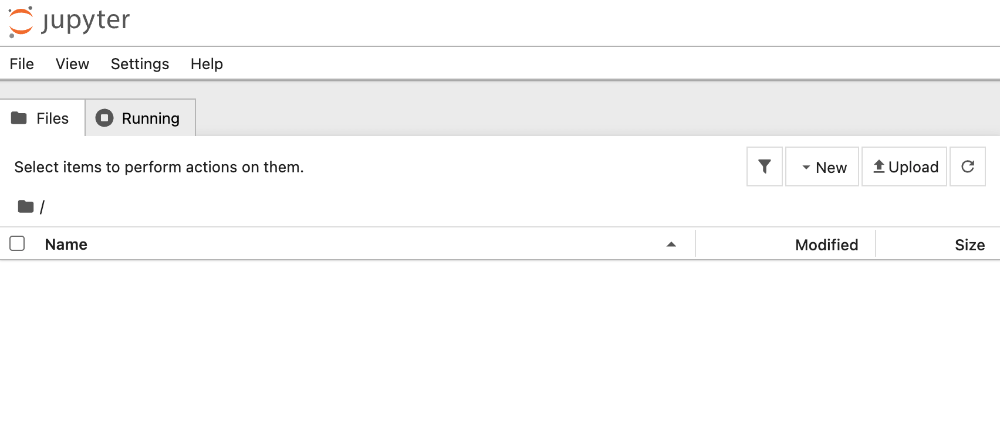

Jupyter Notebook インストール
Jupyter Notebook はウェブベースの対話型コンピューティング環境ですスマートなノートブックと考えることができます：
- メモを書く：Word と同じように、テキスト、数式、画像を記録します。
- コードを書いて実行：セルに Python コードを直接記述し、実行をクリックするとすぐに結果を確認できます。
- 結果の表示：コードで生成したグラフやデータテーブルはノートブックに直接表示されます。
Jupyter Notebook は特に以下の用途に適していますデータクレンジング、統計分析、機械学習モデルのトレーニング、可視化なぜなら、1つのドキュメントでコード、結果、思考の説明のすべての作業を完了できるからです。
インストール前の準備：Python 環境
Jupyter Notebook 自体は Python で書かれているため、インストールする前提として、お使いのコンピューターに Python とパッケージ管理ツールがインストールされている必要があります。pip。
1. Python がインストールされているか確認
お使いのコマンドラインツール：
- Windows：スタートメニューで検索
cmd或コマンドプロンプト。 - macOS：開く
アプリケーション->ユーティリティ->ターミナル。 - Linux：ショートカットキーを使用
Ctrl + Alt + Tターミナルを開きます。
開いたコマンドラインウィンドウで、次のコマンドを入力して Enter キーを押します：
python --version
または
python3 --version
次のようなPython 3.8.10バージョン番号の出力が表示されたら（重要：バージョン番号は 3.3 以上である必要があります）、Python がインストールされていることを示しています。
2. pip がインストールされているか確認
pippip は Python のソフトウェアインストール管理ツールで、通常 Python をインストールするときに一緒にインストールされます。確認コマンドは次のとおりです：
pip --version
または
pip3 --version
同様に、バージョン情報が表示されれば、pippip も準備できています。
3. Python がインストールされていない場合
お使いのコンピューターに Python がない場合でも、心配いりません。インストールはとても簡単です。
推奨方法：アクセスPython 公式サイト、最新の安定版（例：Python 3.11.x）をダウンロードします。ダウンロード時は、必ずチェックを入れてくださいAdd Python to PATHこのオプションこれにより、後で環境変数を手動で設定する手間が省けます。その後、通常のソフトウェアをインストールするように、「次へ」をクリックし続けます次へインストールが完了します。

インストール後、上記の手順 1 と 2 を繰り返して、インストールが成功したことを確認してください。
pip を使用して Jupyter Notebook をインストール
Python と pip の両方が準備できていれば、Jupyter Notebook のインストールは 1 行のコマンドだけで完了します。
コマンドラインツールで、次のコマンドを入力します：
pip install jupyter
コマンドの説明：
pip：Python のパッケージ管理ツールを呼び出します。install：pip に何かをインストールすることを伝えます。jupyter：インストールするソフトウェアパッケージの名前です。
Enter キーを押すと、コマンドラインが Jupyter Notebook とその関連コンポーネントのダウンロードとインストールを開始するのがわかります。

注意：macOS または Linux を使用している場合、または権限の問題が発生した場合は、次のコマンドを使用する必要があるかもしれません
pip3またはコマンドの前に追加しますsudo（macOS/Linux）：
pip3 install jupytersudo pip install jupyter（コンピューターのパスワードが要求されます）インストールが遅い場合は、国内のミラーを使用できます：
pip3 install jupyter -i https://pypi.tuna.tsinghua.edu.cn/simple
インストール成功の確認： インストール後、次のコマンドを入力して Jupyter のバージョンを確認することで、正しくインストールされたことを確認できます：
jupyter --version
バージョン情報が表示された場合、例えばjupyter core : 5.8.1、インストール成功です！
Selected Jupyter core packages... IPython : 8.18.1 ipykernel : 6.31.0 ipywidgets : 8.1.8 jupyter_client : 8.6.3 jupyter_core : 5.8.1 jupyter_server : 2.17.0
次のようなzsh: command not found: jupyter問題が発生した場合、原因は zsh ターミナルが Jupyter の環境変数を読み込んでいないためです。解決策：
- 1、まず Jupyter がインストールされているか確認します。次のコマンドを入力してください： pip3 show jupyter、バージョン情報が表示されればインストール成功です。
- 2、次のコマンドを実行しますecho 'export PATH="$HOME/Library/Python/3.x/bin:$PATH"' >> ~/.zshrc（3.x は実際の Python バージョン（例：3.9）に置き換えてください）。
- 3、次のコマンドを入力しますsource ~/.zshrc設定を再読み込みし、その後次のコマンドを入力しますjupyter notebookこれで起動できます。それでも動作しない場合は、ターミナルを再起動して再試行してください。
Anaconda を使用して Jupyter Notebook をインストール
Anaconda は Python データサイエンス環境管理ツールであり、Python インタープリター、Jupyter Notebook、およびデータ分析でよく使用されるサードパーティライブラリ（Pandas、NumPy など）が内蔵されています。1 回のインストールで全ての依存関係を解決でき、追加の設定は不要です。
Anaconda を使用するとワンクリックで全ての環境が揃い、手動でライブラリをインストールする際に発生し得るバージョン競合を減らせます。
Anaconda チュートリアル：https://www.runoob.com/python-qt/anaconda-tutorial.html
-
Anaconda 公式サイト：https://anaconda.org/。
手順
1、Anaconda をダウンロード：アクセスAnaconda 公式サイト、お使いのオペレーティングシステム（Windows、macOS、Linux）に適したインストーラーをダウンロードします。

2、インストーラー：ダウンロードした .exe または .pkg ファイルを実行します。インストール中に次の項目にチェックを入れることをお勧めしますAdd Anaconda to my PATH（公式は推奨していませんが、初心者がコマンドラインで直接起動するには非常に便利です）。

3、Anaconda のインストールを確認：インストール完了後、システムのコマンドプロンプト（Windows）またはターミナル（macOS/Linux）を開き、次のコマンドを入力します：
conda --version
バージョン番号（例：conda 23.10.0）が表示されれば、インストール成功です。
4. Jupyter Notebook を起動：Anaconda Navigator を開きます（Windows ではスタートメニューに、macOS では Launchpad にあります）。インターフェイスに次の項目が表示されますJupyter Notebook、クリックLaunchボタンをクリックすると、数秒後にデフォルトのブラウザで Jupyter Notebook のインターフェイスが自動的に開きます。

jupyter notebook
Enter キーを押すと、起動成功のメッセージが表示されます：

デフォルトのウェブブラウザ（Chrome、Firefox など）が自動的に新しいページを開きます。アドレスは通常 http://localhost:8888 で、これが Jupyter Notebook のダッシュボードです：

その他の拡張
クリックしてノートを共有
ノートはこの記事の内容を拡張したものである必要があります！
記事の投稿は、ここをクリック
登録招待コードの取得方法
ノートを共有する前にログインが必要です！
登録招待コードの取得方法